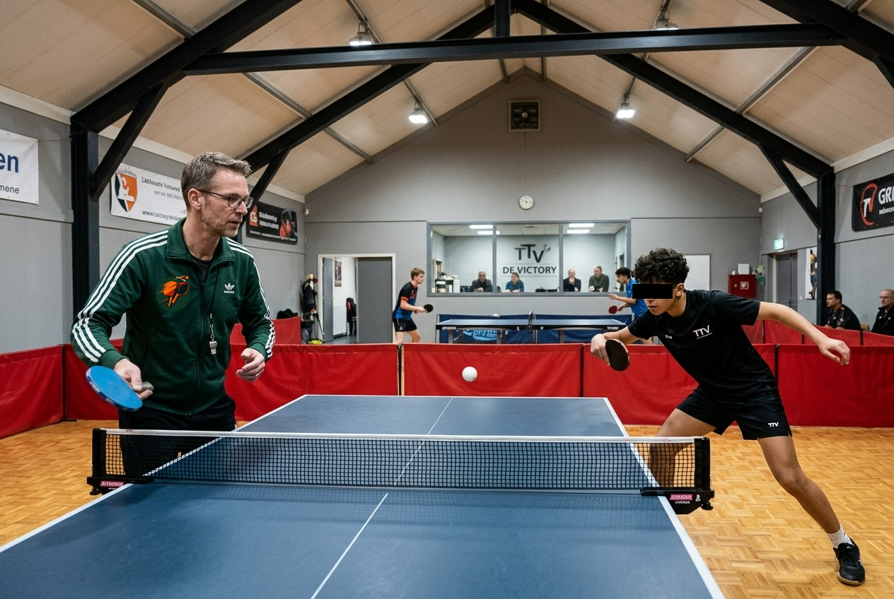

‘Schaken op topsnelheid’: Edward Westhoff brengt 3 VMBO-kader in beweging
Geen telefoons, geen excuses, maar pure focus, zweet en adrenaline. Hoe een energieke clinic bij TTV The Victory Weesp jongeren uitdaagt om grenzen te verleggen en écht contact met elkaar te maken.

WEESP – Het begon met lichte scepsis op woensdagochtend in de sportzaal van TTV The Victory aan de ’s-Gravelandseweg. Een klas van 22 jongens en meiden uit 3 VMBO-kader van een regionale scholengemeenschap stapte binnen. Handen diep in de zakken van hun trainingsbroeken, capuchons op, smartphones nog krampachtig in de hand. Tafeltennis? “Dat doen we toch alleen op de camping?” klonk het lachend uit een hoek.
Maar wie Edward Westhoff kent, weet dat apathie binnen tien seconden verleden tijd is. De voormalig eredivisiespeler en gediplomeerd trainer blies op zijn scheidsrechtersfluit, zette de zaalmuziek een tandje harder en keek de groep met een twinkeling in de ogen aan: “Vergeet de camping. Vanaf nu speel je schaken op 120 kilometer per uur. Binnen vijf minuten hebben jullie je telefoon vergeten.”
“Bij tafeltennis telt je achtergrond niet, je merkjas niet en je cijferlijst niet. Alleen de bal liegt nooit.”
— Edward Westhoff, TT ClinicsDe battle: Tarik vs. de meester
Na een warming-up vol voetenwerk-drills en reflexoefeningen ging het tempo flink omhoog. Edward demonstreerde hoe een schijnbaar simpel batje met stroef rubber een bal kan laten draaien met meer dan 3.000 toeren per minuut. Toen de leerlingen zelf achter de Donic-wedstrijdtafels stapten, veranderde de sfeer razendsnel van afwachtend naar bloedfanatiek.
Het moment van de ochtend ontstond aan tafel 1. Tarik (15), die op school bekendstaat als een talentvolle voetballer maar soms moeite heeft om zijn focus erbij te houden, werd door zijn klasgenoten naar voren geduwd: “Meneer Edward, Tarik denkt dat hij een punt van u pakt!”
Wat volgde was een zinderende rally. Edward gaf de bal zware backspin mee, Tarik dook er vol overgave in, raakte de bal op topsnelheid en stuurde hem via de buitenkant van de witte lijn terug. De hele zaal ontplofte in gejuich. De foto hierboven toont het exacte moment: pure concentratie, de bal strak in het vizier en twee generaties die elkaar vinden in sportieve intensiteit.
“Meneer, hoe deed u dat effect nou?” vroeg Tarik na afloop met een bezweet voorhoofd en een brede glimlach. “Die bal dook ineens weg naar links. Dat wil ik leren, dat is echt slim gespeeld.”
Reactie van de vakleerkracht Lichamelijke Opvoeding:
“In het traditionele gymonderwijs zie je soms dat dezelfde groepjes leerlingen vooraan staan en de rest afhaakt. Tafeltennis werkt hier als de ultieme gelijkmaker. Edward heeft een enorme gave om jongeren direct aan te spreken in hun eigen belevingswereld. Geen autoritair gedoe, maar respect, humor en direct laten zien wat toewijding oplevert. De leerlingen hebben het er in de klas nog steeds over.”
King of the Court: Verbinding zonder schermen
De clinic werd traditioneel afgesloten met een wervelend King of the Court toernooi. In rondes van anderhalve minuut schoven winnaars door naar de hogere tafels. De competitiedrang bereikte een kookpunt, maar met een opvallend respectvolle ondertoon: na ieder punt werd er een vuistje gegeven, fouten werden niet bekritiseerd maar gecorrigeerd, en klasgenoten die elkaar normaal niet spraken stonden zij aan zij te juichen.
“Jongeren zitten tegenwoordig urenlang achter beeldschermen,” vertelt Edward na afloop terwijl de zaal leegstroomt en het zweet nog op zijn slapen staat. “Hun reactievermogen en motoriek hebben stimulans nodig die snel en uitdagend genoeg is om die dopamine van een telefoon te overtreffen. Tafeltennis is daar perfect voor: een bal is binnen 0,3 seconde bij je. Je móét in het hier en nu zijn. Dat geeft jongeren rust in hun hoofd en zelfvertrouwen in hun lijf.”
Waarom scholen en jeugdorganisaties kiezen voor TT Clinics:
Directe Focus & Plezier
Doorbreekt schermmoeheid met snelle drills en dynamische spelelementen.
Inclusief & Gelijkwaardig
Geschikt voor elk niveau en elke achtergrond. Iedereen scoort en leert.
Topsport Begeleiding
Geleid door voormalig eredivisiespeler Edward Westhoff met licentie & passie.
Ook een clinic organiseren voor jouw school of klas?
Geschikt voor VMBO, HAVO/VWO, MBO en sportdagen. Wij stemmen de opzet perfect af op de leeftijd, groepsgrootte en doelstelling van de school.